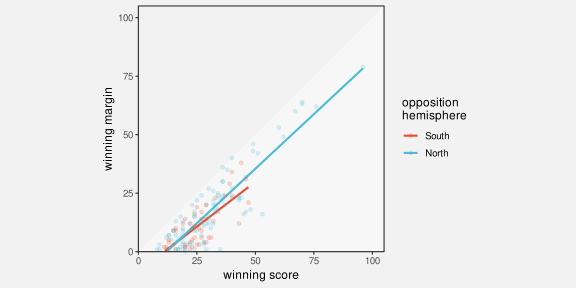
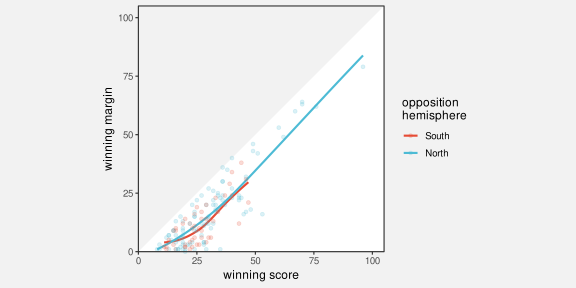
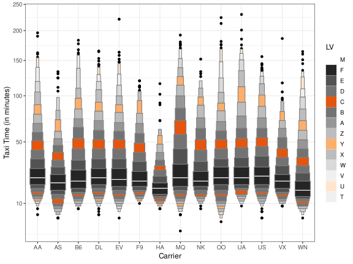
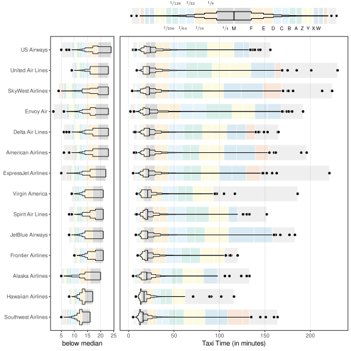

15 Review
Add review at the end that reinforces the threads like visual feature, visual shape, visual object and mappings
If we encode X using Y encoding what can we decode?
Possible encoding end points:
- visual feature
- visual summary
- emergent feature
- visual shape
- visual object
- text
Possible decodings from encoding end points:
- qual/quant data value
- data summary
- higher level information/knowledge/wisdom
Do two versions (at least):
Set of questions for when you already have a plot and want to understand why it works or not
Another set for if you want to create a data vis
Basic questions:
- What are you asking the visual system to do?
- Is the visual system good at that task?
- Are you asking the viewer to produce visual summaries when it would be easier to produce data summaries?
Present process by which a data vis can be broken down. What data symbols are being used? (simple or complex) What mappings are being used? What do we want to decode? (data or summaries) If mapping back to raw data, are the mappings accurate? What can be mapped back to? Are mappings congruent with data?
…
List of questions to evaluate a data vis (maybe nest these a bit):
What do you want the viewer to be able to decode?
Do the mappings support that goal?
What are the data variables
What visual features are they mapped to
What type of data
Can the visual features represent the data
Is there the capacity to represent all categories
How accurate are the decodings
Is there congruence or dissonance in the mapping
Mapping data or data summary
Do visual features interact
Are there emergent features
Is the data symbol a visual shape
Is that appropriate
A visual object
Is that appropriate
Learned mappings somehow (distinct from implicit mappings)
Do all visual differences correspond to differences in the data?
Are all differences in the data represented by visual differences?
Does each data value map to its own data symbol If not, individual data values may be difficult to decode
Do multiple data values map to a single data symbol If not, data summaries may be difficult to decode
And so on …
15.1 Examples
Use heatmap as case study?
do the side-by-side pie chart idea as an example of reasoning your way to a new visualisation.
Move the discussion/revisit of tables from text section to here ?
Another possible application of data vis knowledge: Analyse one of the weird boxplot variations that look a bit like a ziggurat?
This is letter-value plot:
“Letter-Value Plots: Boxplots for Large Data” Hofmann et al (2015)
Nice explanation of calculations …
24 Beyond the Boxplot: Tukey’s Letter-Value Summaries – Exploratory Data Analysis in R https://share.google/M2qXCsIxsSsqM7jFQ
Labelling is an example of a text encoding that has no learned decoding For most people So the text is just a symbol like a pch You get difference but that is all
{lvplot}
This line suggests that width is calculated to be proportional Or at least can be …
https://github.com/hadley/lvplot/blob/51ad401be5e017d37883ec5d149bc1818246b6f5/R/draw.r#L43
15.2 Case study: Lines of best fit
Figure 15.1 shows a scatter plot of the winning margin versus the winning score for Tier One nations at Rugby World Cup matches. The hemisphere of the losing team is encoded as the colour of the data points and a trend line has been added for each hemisphere.
The trend lines are mappings of data summaries, least-squares regressions, to line data symbols. The data summaries consist of intercept and slope values, which are encoded as the vertical positions and the angles of the lines, respectively (Figure 8.2).
The data symbol is very simple and decoding the data summaries is also simple because it just involves decoding angle and vertical position. For example, we can see that, in general, the winning margin is larger when the winning score is larger, but the trend lines suggest that the increase in the winning margin is slower for southern-hemisphere teams (they fight harder in defeat).
Figure 15.2 shows the same data as Figure 15.1, but this time there are curved trend lines added rather than straight trend lines.1 The curves are mappings of data summaries again, but this time loess model fits. This means that the mapping involves a series of predicted values encoded as horizontal and vertical positions for the curve. In other words, the data summaries are encoded as visual features that produce a visual shape

Nice example of a complex calculation, the results of which are what gets visualised. Also example of performing the calculation numerically rather than asking the viewer to perform it visually. This was in summaries.qmd, but it cannot be there because it requires scatter plots, which come in the next section. Add this after mention of visualising models?
Add footnote to Hadley’s more complex model visualisation paper https://vita.had.co.nz/papers/model-vis.pdf https://dl.acm.org/doi/10.1002/sam.11271
model fits like lm straight line and ref Hadley’s data-space vs model-space “data models” to mirror “data statistics” (revisit box plots as VERY simple models? also talk about failing assumptions of these models, like unimodal for boxplot)
footnote cite to Tukey for visualising phenomena rather than raw data? “Data-Based Graphics: Visual Display in the Decades to Come” Tukey (1990)
- “Beware of Validation by Eye: Visual Validation of Linear Trends in Scatterplots” Braun et al (2024) People are biased towards orthogonal distance to line rather than vertical distance.
loess curves Another example of data -> summary -> features -> shapes -> summaries
15.3 Case study: 2D density plots
Stat summary visualised
Compare with visual summary of density of points
Different pros for each approach
refer back to Section 4.3 (overplotting) and mention that shapes are one solution, with all of the drawbacks of not being able to decode individual data values. Footnote surjective/injective?
15.4 Case study: kiviat plots or radar plots or spider plots
(David Peebles (2008))
15.5 Case study: Letter-value plots
Figure 15.3 shows a letter-value plot of taxi time for over 450,000 flights within the United States, broken down by airline.2
We will use the information in this book to analyse the data visualisation in Figure 15.3. We will break Figure 15.3 down into the mappings that are being used and the effectiveness of those mappings.

The purpose of a letter-value plot is to visualise the distribution of a set of data values. The information that we want to decode is about the distribution of the data values: the average value, the spread of the values, the skewness, and so on.
The main motivation for the letter-value plot design is that a normal boxplot produces way too many outliers for such a large amount of data. This is shown in Figure 15.4. Furthermore, alternatives to the boxplot, like violin plots, that fix the problem of too many outliers, are reliant on tuning parameters, like kernels and bandwidths (Section 10.3).

The letter-value plot aims to fix the problem of outliers, while at the same time, like the original boxplot, remain free of tuning parameters. This is achieved by displaying as many letter values as are supported by the amount of data, with only individual data values beyond those limits shown as outliers.
The letter-value plot is an example of a novel data visualisation, so this provides a good opportunity to analyse whether a letter-value plot is an effective mapping of information.3
15.5.1 Letter values
A boxplot is based on the median and the upper and lower quartiles of a data set. These statistics are just the first two levels of a more general concept of letter values introduced in “Exploratory Data Analysis” by Tukey (1977).
Letter values are order statistics, where the \(i\)th letter value approximates the quantile corresponding to a tail area of \(2^{−i}\). The first letter value is the median, which splits the data into halves (\(2^{-1}\)), the second letter values are the upper and lower quartiles, which leave a quarter of the data in each tail (\(2^{-2}\)), and so on. The amount of data between letter value \(i\) and letter value \((i+1)\) is \(2^{-(i+1)}\). For example, the amount of data between the upper quartile (letter value 2) and letter value 3 is an eighth (\(2^{-3}\)).
The letter values are named M for median, F for fourths, E for eighths, then, following the alphabet, D for sixteenths, C for thirty-seconds, down to A for one-hundred and twenth-eighths, then starting again at the end of the alphabet, in reverse alphabetic order, Z for two-hundred and fifty-sixths, Y for five-hundred and twelfths, and so on.
15.5.2 Data symbols
There are two types of data symbol in a letter-value plot: complex data symbols consisting of multiple rectangles, which we will call letter-value symbols, to represent the distribution of the data values; and very simple data points, which represent the outliers (if any).
15.5.3 Mapping visual features
In Figure 15.3, the airline (Carrier), qualitative data values, are encoded as the horizontal position of the letter-value symbols. The encoding of airline as the position of data symbols is very effective; we can easily differentiate between the airlines.
The other data values, the taxi times, are mapped to the letter-value data symbols within the plot. However, the letter-value plot encodes data summaries—letter values—rather than raw data values.4 Consequently, all that we can expect to decode from the plot is information about the letter values, such as the location of specific letter values, plus possibly data summaries of letter values, such as the spread of letter values.
Each letter value is encoded as the vertical position of the top (or bottom) of a rectangle within the letter-value symbol. The median (letter value 1) is marked as a single white line rather than a rectangle. This is effective for decoding individual letter values for an airline. For example, we can see that one of the letter values for the AA airline is just over 50.
TODO Explain that a variable number of letter values are used for each airline - only letter values that can be estimated from the data.
The depth of each letter value is encoded as the width (length) of a rectangle within the letter-value symbol. The depth is how many data values lie beyond that letter value; for example, the depth of the median is half the total number of data values. This is also an encoding of a data summary. However, the actual encoding is only based on the order of the depth of the letter values, with regular decrements from widest at the median (letter value 1) to narrowest at the final letter value (e.g., letter value 13 for airline AA). In effect, we are encoding a summary of a data summary. Using length for the encoding is effective, but we can only decode ordinal information about the depth of the letter values (because that is all that we encoded).
The data density—the number of data values between adjacent letter values—is encoded as the colour of a rectangle. The luminance of the rectangle varies from darkest for the highest density (approximately one quarter of the data values lie between the median and the upper quartile) to lightest for lowest density (approximately one ten-thousandth of the data values between the most extreme letter values). In addition, the hue/chroma of a rectangle encodes a categorisation of the letter values (yet another data summary); every fourth letter value is orange, while all the other letter values are grey.
The luminance encoding of density only allows us to decode ordinal information about the data density between letter values.
Like the widths of the rectangles, the shades of the rectangles steadily decrease upwards from the median and downwards from the median. We can also identify rectangles that represent the same letter value for different airlines by finding rectangles with the same shade in the letter-value symbols for two airlines. This is less effective due to the relatively limited capacity of luminance encoding (Section 6.2). The different shades of grey are much more difficult to identify than, for example, the different horizontal locations for different airlines.
The chroma encoding of every fourth letter value is very effective for decoding between those letter values and all of the others, which is essentually an encoding of two groups (orange versus grey).
It is also very effective for identifying the same letter value across different airlines. The difference in chroma between the oranges and the greys makes the oranges easy to identify and there are only three different luminances for the orange rectangles, so they are more easily differentiated.
The outliers in a letter-value plot are encoded differently. The individual taxi times for outliers are encoded as the vertical position of data points, with the airline encoded as the horizontal position, as for the letter-value symbols. These allow for very simple and effective decodings. It is even possible to rapidly decode numbers of outliers thanks to the small number of data symbols involved (Section 8.2).
Table 15.1 summarises the mappings that are involved in a letter-value plot. There are several effective encodings for both quantitative and qualitative data values, but the encoding of data density and the encoding of letter-value depth both lose some information. One overall point is that this is quite a large number of encodings for a single data visualisation. This means that the mappings in Figure 15.3 produce a relatively complex data visualisation. There are many visual features changing, which makes each individual encoding in Figure 15.3 more difficult to decode (Section 2.5). Compare this with Figure 15.4 which, for all its faults, is a much simpler data visualisation because it involves fewer changes in visual features.
| Value | Raw/Summary | Type | Encoding |
|---|---|---|---|
| airline | raw data value | qualitative | position (horiz) |
| taxi outlier | raw data value | quantitative | position (vert) |
| taxi letter value | summary of taxi | quantitative | position (vert) |
| letter value depth | summary of letter value | qualitative | length (width) |
| taxi density | summary of taxi | quantitative | colour (luminance) |
| fourth letter value | summary of letter value | qualitative | colour (chroma) |
15.5.4 Combining mappings
There is one obvious interaction between encodings in Figure 15.3. The width of the rectangles (letter-value depth) and the height of the rectangles (difference between adjacent letter values) together produce the emergent feature of area for the rectangles.
Unfortunately, this area does not correspond to any data value or summary of the data. Letter value depth multiplied by difference between letter values does not give a meaningful value. This makes Figure 15.3 confusing because the rectangles areas do not decode to anything useful (Section 9.7).5
Even worse, the implicit decoding of the areas of the rectangles in the letter-value data symbols suggests that, for example, the (darkest) rectangle just above the mean is about five times the size of the highest (lightest) rectangle for the “AA” airline. However, the proportion of the data that lies between the median and the next letter value is actually over sixteen thousand times more than the proportion of the data that lies between the top two letter values. In other words, the area of the rectangles is actually misleading.
There is also a redundant mapping in Figure 15.3 (Section 9.8). Because the depth of a letter value is related to the order of the letter value, both the luminance of each rectangle in the letter-value symbol and the width of the rectangle encode essentially the same information. This has the benefit of providing more than one way to decode this information. However, given that we have already identified that there are a large number of encodings in Figure 15.3, this may be a luxury that we can ill afford.
15.5.5 Non-linear scales
An extra complication with the encoding of vertical position in Figure 15.3 is that the vertical scale is non-linear; it is actually the square root of the letter values that are encoded as the vertical position of the tops (or bottoms) of the rectangles in the letter-value data symbols. This makes the decoding of letter values and the comparison of letter values much more difficult because the same physical difference does not decode to the same difference between letter values. For example, for the AA airline, although most of the letter values appear to be similar distances apart, in terms of taxi data values, the letter values are further apart for more extreme letter values (Section 4.7).
We have already established that the areas of the rectangles in the letter-value data symbols provide no useful information and are potentially misleading. The non-linear scale only makes that potentially misleading information even more misleading.
15.5.6 Visual shapes
The letter-value data symbols encode multiple letter values within a single data symbol, which produces a visual shape (Chapter 10). We have a data symbol that is widest at the median of the data values and narrows towards either extreme.
This allows us to decode useful data summaries about the distribution of the taxi times. For example, the fact that all of the letter-value data symbols narrow more rapidly below the mean than they do above the mean suggests a skewed distribution of taxi times for all airlines.
It is also possible to identify airlines that have similar distributions based on similar visual shapes. These are examples of effective decodings of data summaries from the visual shapes produced by the letter-value data symbols.
One caveat is that the widths of the visual shapes are potentially misleading because they do not narrow anywhere near as fast as the distribution of taxi times. In other words, the shape of the letter-value data symbols does not provide accurate decoding of quantitative features of the distribution of taxi times, only broad qualitative features. For example, we can decode whether the distribution is symmetric or skewed, but we cannot decode how skewed the distribution is.
15.5.7 Mapping scales
We have already discussed that the y-axis scale is non-linear. The square root of taxi times, rather then the raw taxi times, are encoded as the vertical position of the tops (or bottoms) of rectangles. This creates the usual problems for encoding a non-linear scale as tick marks and text labels. For example, the square-root taxi time of 10 is encoded as a position about two-thirds of the way up the y-axis, but this is encoded as the text “100”.
On one hand, this is a valuable encoding of the value 10 because it saves us the mental effort of having to reverse the square root transformation. If we had encoded this position as the text “10”, then we would be required to perform the mental calculation to decode the taxi time 100.
On the other hand, encoding the square root taxi times as text that corresponds to the taxi times causes problems because we cannot linearly interpolate between the text values. Yes, we can correctly decode the precise taxi time 100 from the text “100”, and 50 from “50”, but it is very difficult to decode any taxi times in between.
The x-axis is more straightforward because it reflects a simpler encoding. Each airline is encoded as the horizontal position of a letter-value data symbol. On the x-axis, we encode each airline as the horizontal position of a tick mark and a text label. A vertical grid line connecting the letter-value data symbols and the tick marks helps to form a strong visual grouping of data symbols with their respective labels.
However, the encoding of airlines to text is missing a learned encoding (Section 13.2), at least for infrequent travellers internal to the United States of America. For example, not all viewers will immediately decode the text “MQ” to the name of an airline. In effect, the x-axis tick labels only involve an encoding of airline as the pattern of the text. We can only tell that there are different airlines because they use different combinations of letters.
The legend provides information about the colour encoding of letter values. The data density is encoded as the luminance of a stack of squares, with every fourth square having a different hue/chroma (orange). In addition, the letter values are encoded as individual text characters alongside the squares.
One problem is that there is no learned decoding for the letter values. For example, a letter value of “Z” is not immediately decoded as a meaningful data value. As with the x-axis, the encoding only provides us with a different text pattern for each letter value. We can identify that the letter values are different from each other, but nothing more.
In particular, there is no way to decode the absolute data density from the legend. The luminance of the squares gives an indication of relative data density (darker squares are higher density)
Another minor problem is that the letter values are placed alongside each rectangle, but they really correspond to the boundaries between the rectangles in the letter-value data symbols. For example, the true position of letter value “F” is at the top (and bottom) of the black rectangle in each letter-value data symbol.
Finally, there is no explanation of the width of the rectangles in the letter-value data symbols. There is no guide that explains how the depth of the letter values is encoded as the width of the letter-value data symbols.
15.5.8 Mapping structure
Another problem with the legend in Figure 15.3 is that the squares within the legend are not consistent with the rectangles in the letter-value data symbols (Section 14.2). Specifically, the rectangles in the letter-value data symbols have a grey border, but the squares in the legend have no border. This also makes it harder to match the colours in the legend with the colours in letter-value data symbols because the surrounding colours are not the same (Section 6.3).
A final small inconsistency in the legend is that the luminance of the squares in the legend decrease from top to bottom, while the luminance of the rectangles in the letter-value data symbols decreases from the middle both up and down, with the clearest decrease upwards, from middle to top.
There are also several horizontal grid lines in Figure 15.3. While these can help with decoding individual letter values that lie exactly on a grid line, thanks to the non-linear y-scale, decoding letter values relative to the grid lines is restricted to ordinal comparisons. The large number of grid lines also adds to the overall visual complexity of Figure 15.3 that we discussed earlier.
15.5.9 Building something better?
Having used the information in this book to identify a number of problems with the mappings in Figure 15.3, we now attempt to use the information to make improvements to Figure 15.3.
Figure 15.5 shows a data visualisation that is based on the same data taxi data as Figure 15.3, but uses a different set of mappings. One solution to the complexity of Figure 15.3 would be to avoid multiple encodings by producing several, simpler data visualisations for different purposes. For example, one data visualisation that just shows the distribution shapes and another that shows the location of specific letter-value taxi times. However, Figure 15.5 still attempts to fit all of the information from Figure 15.3 into a single data visualisation.
This is unlikely to be the optimal solution, but we can at least provide justifications for the design choices that are being made.

The airlines are encoded as the vertical position of letter-value symbols (just a swapping of axes from Figure 15.3). This is to allow for the longer y-axis labels.
The airline has been encoded as the full airline names in the text labels on the y-axis. It is now possible to decode the airline for each letter-value data symbol.
The airlines have been ordered by median. This simplifies the data visualisation a little because there is a simple monotonic trend in the median lines, rather than a series of increases and decreases. It also makes comparisons easier between more similar airlines because they are now closer together (Section 5.1).
Instead of a non-linear scale for encoding the taxi values, the encoding is linear. This makes it possible to decode individual letter value taxi times and compare them between airlines.
Because the linear scale makes it even more difficult to see the distribution below the median, an extra panel has been added that shows the distribution below the median with a higher-resolution scale.
Taxi times are mapped to a letter-value data symbol for each airline based on the letter values and the data density. The total area of each letter-value data symbol is the same and the narrowness of the data symbol properly encodes the amount of data between different letter values; we can more effectively decode data summaries of the distribution of taxi times for different airlines.
Letter values are encoded as the position of coloured bars behind the letter-value data symbols. This allows the location of the letter values to be decoded regardless of the narrowness of the letter-value data symbol. There is also a bar that encodes the extent of the outliers.
Letter values are also encoded as the hue of the coloured bars. This qualitative colour palette is used to make it easier to differentiate letter values and compare them between airlines. Each hue is repeated twice to reduce the amount of visible change, while still allowing easy decoding. The colours are from the Okabe-Ito colour palette (Section 6.10), with light grey reserved for the outliers bar.
The legend is more consistent with the letter-value data symbols. The letter values are placed at the borders of the bars. The data density is encoded as vulgear-fraction text labels.
Hofmann, Heike, Hadley Wickham, and Karen Kafadar. 2017. “Letter-Value Plots: Boxplots for Large Data.” Journal of Computational and Graphical Statistics 26 (3): 469–77. https://doi.org/10.1080/10618600.2017.1305277.
Tukey, John W. 1977. Exploratory Data Analysis. Reading, MA: Addison-Wesley.
Wickham, Hadley, and Heike Hofmann. 2025. lvplot: Letter Value ’Boxplots’. https://doi.org/10.32614/CRAN.package.lvplot.
These are loess model fits (locally-estimated scatterplot smoothing).↩︎
This plot reproduces Figure 2 from Hofmann, Wickham, and Kafadar (2017). This is the default letter-value plot produced by the R package {lvplot} (Wickham and Hofmann 2025).↩︎
In order to incorporate as many points as possible, this analysis just focuses on the default {lvplot} settings that are used in Figure 15.3 and even sinks to the level of critiquing the specific data set (and non-linear scales) that are used in this specific plot. It is a very unfair attack on letter-value plots in general and the {lvplot} package in particular.↩︎
Letter values are an interesting data summary in the sense that each letter value corresponds to a raw data value. In other words, letter values are a subset of the original raw data values, chosen to represent boundaries beyond which a certain proportion of the raw data values lie.
This is not entirely true because a letter value may fall between two raw data values.↩︎
This criticism is only relevant to the default letter-value plot. A variation of the letter-value plot design involves a different encoding of width so that the area of the rectangle reflects the proportion of the data between the letter values.↩︎